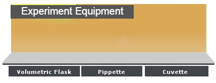
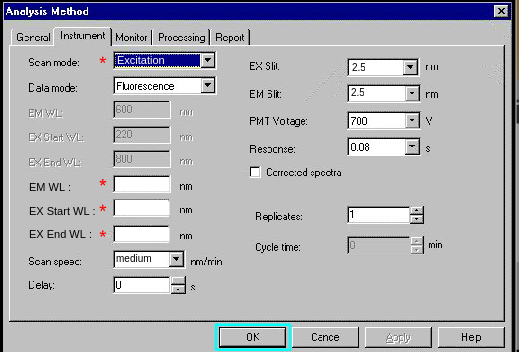

Measurement of CD Spectra at Different Temperatures
Reset
Manual
×
Manual
Click on SOLUTION to bring it to the experiment table.
Click on the PIPPETTE to bring it to the table
Click on the pipette again to transfer the solution into the cuvette.
Click on the CUVETTE to bring it to the experiment table
Click on the lid of sample chamber of the Spectrometer to open it for placing the sample in the instrument.
Click on the cuvette to place it in the sample holder of the chamber.
Close the lid of the sample chamber by clicking on the lid.
Clcik on the Computer Screen


Excitation
Emission